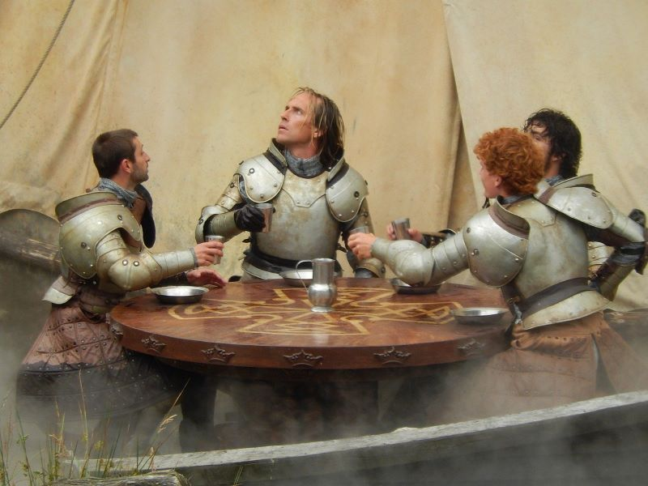

Clube escolar de Jogos medievais
Explicando sobre o clube
O clube visa o aprendizado e a busca de novas experiencias com a história antiga, sempre tentando trazer novas experiencias e aprendizado de uma forma mais descontraída, este clube também trará experiencias únicas como atirar de arco e flecha, a prática de algumas lutas e esportes da época
Criadores do clube
Este e um projeto desenvolvido por alguns alunos do 3A e 3B da escola João Teixeira de Araújo do ano de 2022, com auxílio de dois professores da escola, o professor Wesley de educação física e o professor Nelson de filosofia e sociologia